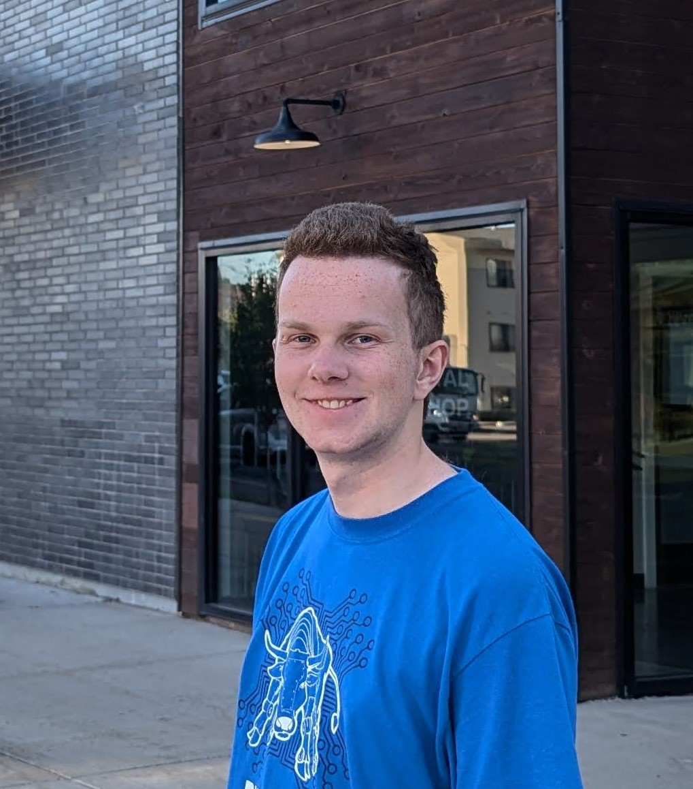

Jordan Robison | WDD130
I'm a freshman from Boise, and I'm excited to live in a city with cooler weather. I am studying software engineering, and I am not completely sure what I want to go into for sure. I have done some HTML and CSS before but it has been some time.
I really like making things in general. Coding websites, games, robots. I have even made some games that I publish to itch.io (links below). I was on an FRC robotics team in high school. I did CAD, programming, and website maintenance.